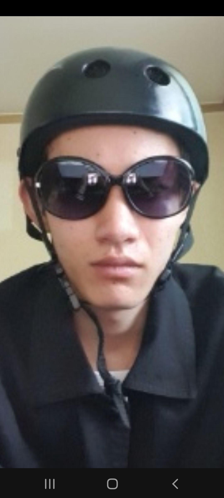

물감을 두껍게 칠하는 임파스토 기법을 통해 캔버스 위에 강렬한 질감을 표현한 추상화입니다. 붉은색과 분홍색의 조화가 에너지를 전달하며, 구체적인 형태보다는 색채의 흐름 자체에 집중하게 만드는 현대 미술 작품입니다.
물감을 두껍게 칠하는 임파스토 기법을 통해 캔버스 위에 강렬한 질감을 표현한 추상화입니다. 붉은색과 분홍색의 조화가 에너지를 전달하며, 구체적인 형태보다는 색채의 흐름 자체에 집중하게 만드는 현대 미술 작품입니다.
인간의 내면에 감춰진 고독이나 불안을 형상의 왜곡을 통해 보여주는 표현주의적 작품입니다. 어두운 배경과 대비되는 강렬한 얼굴의 묘사는 보는 이로 하여금 강한 감정적 울림을 느끼게 합니다.
다양한 기하학적 패턴과 화려한 직물의 질감을 결합하여 탄생한 콜라주 아트입니다. 서로 다른 조각들이 모여 하나의 조화로운 얼굴을 형성하는 모습은 현대 사회의 다양성과 복합적인 정체성을 상징합니다.
빈센트 반 고흐가 프랑스 아를에서 밤의 빛을 탐구하며 그린 걸작입니다. 밤하늘을 수놓은 별빛과 강물에 반사된 불빛이 소용돌이치는 듯한 붓터치와 어우러져 신비롭고 서정적인 밤의 풍경을 완성했습니다.
장 오노레 프라고나르의 1767년 작으로, 로코코 미술 특유의 화려함과 우아함이 돋보입니다. 숲속에서 그네를 타는 여인의 역동적인 드레스 자락과 빛의 묘사는 당시 귀족 사회의 낭만과 유희적 분위기를 잘 담아내고 있습니다.
